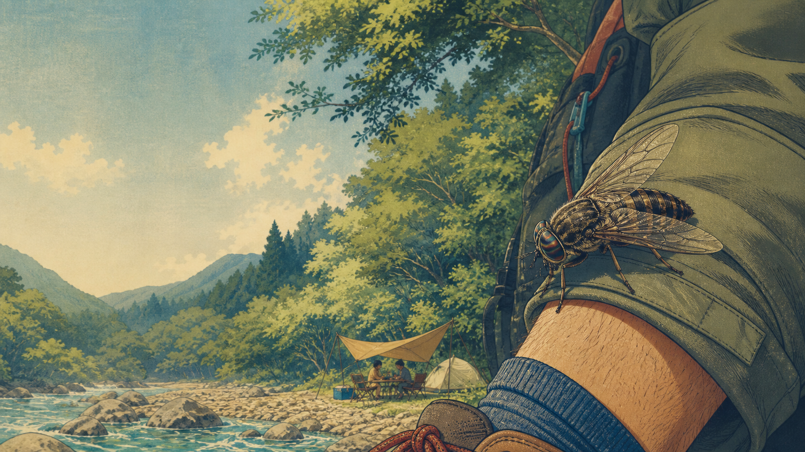

A mutuca existe no Japão e, em japonês, normalmente aparece como アブ (abu). Ela não é o mesmo mosquito comum que entra no quarto à noite. A mutuca é uma mosca hematófaga maior, frequente em áreas de rio, mata, montanha, camping, fazenda e estrada rural durante o calor.

Para brasileiros no Japão, o susto costuma vir porque a picada parece mais agressiva do que a de pernilongo. A Sociedade Japonesa de Dermatologia classifica ka (mosquito), abu (mutuca) e buyu/buyo entre insetos que sugam sangue e podem causar reação local. Na prática: pode doer na hora, inchar, coçar bastante e incomodar por dias.
Por que a mutuca incomoda tanto
A mutuca não perfura a pele como uma agulha fina. Ela corta superficialmente para alcançar sangue, por isso a sensação pode ser de ardência ou beliscão forte. Algumas pessoas ficam apenas com vermelhidão local; outras desenvolvem inchaço maior, calor, coceira intensa ou reação alérgica.
O risco aumenta quando a pessoa coça sem parar, abre ferida e facilita infecção secundária. Crianças, pessoas com histórico de alergia e quem teve reação grande antes devem observar com mais cuidado.
Onde aparece no Japão
O abu costuma aparecer em ambientes úmidos e naturais: margens de rio, lagos, áreas de pesca, trilhas, campings, fazendas, estábulos, montanhas e estradas próximas à mata. Verão e início do outono são os períodos mais chatos, especialmente em dias quentes e abafados.
Quem vai para churrasco em rio, acampamento, cachoeira, praia fluvial ou trilha em regiões rurais deve se preparar. O Japão é seguro em muita coisa, mas natureza japonesa continua sendo natureza: inseto, calor, correnteza, cobra e urso não somem só porque o lugar é bonito.
Como evitar picadas
Use roupa que cubra mais pele quando estiver em mata ou beira de rio: manga leve, calça, meia e calçado fechado ajudam. Repelente pode reduzir o risco, mas precisa ser reaplicado conforme rótulo, suor e contato com água.
Evite perfume forte em passeio de natureza, mantenha lixo e restos de comida fechados, não fique parado perto de mato alto e observe se há concentração de insetos ao redor de água parada, animais ou estacionamento de área rural. Em camping, tela, mosquiteiro e fechamento de barraca fazem diferença.
Se for picado
Lave a área com água e sabão, evite coçar e resfrie com compressa fria se houver dor ou inchaço. Produtos de farmácia para picada podem ajudar em reações leves, mas siga o rótulo e pergunte ao farmacêutico se tiver dúvida, especialmente em crianças.
Procure atendimento se houver inchaço muito grande, dor forte, pus, febre, listras vermelhas subindo pela pele, piora progressiva, tontura, falta de ar, inchaço no rosto ou reação generalizada. Esses sinais fogem de uma picada comum e merecem avaliação médica.
Mutuca, buyu e mosquito não são a mesma coisa
No português do cotidiano, muita gente chama tudo de mosquito. No Japão, vale diferenciar: ka é mosquito comum, abu é mutuca, e buyu/buyo é outro inseto pequeno de áreas de rio e montanha, também conhecido por picadas fortes. A prevenção se parece, mas reconhecer o ambiente ajuda a não subestimar o problema.
Se você ouviu “mutuka” entre brasileiros no Japão, provavelmente a pessoa está falando de mutuca mesmo. Para pesquisar em japonês, use アブ e, para farmácia, expressões como 虫刺され (mushisasare, picada de inseto).
Aviso de atualização
Texto revisado em 12 de agosto de 2026. Este guia é informativo e não substitui atendimento médico. Reações a picadas variam por pessoa, espécie e região. Em caso de sintomas fortes, procure clínica, pronto atendimento ou orientação farmacêutica local.
Fontes consultadas
- Japanese Dermatological Association: 虫刺され Q&A
- Japanese Dermatological Association: insetos hematófagos incluindo アブ
- Japanese Dermatological Association: sintomas de picadas de inseto